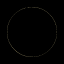
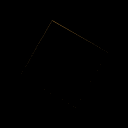
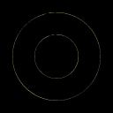
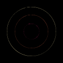
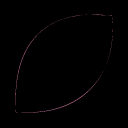
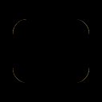
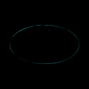
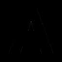
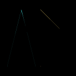
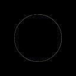

AA fidelity; non-AA coverage; Hausdorff samples ≤0.25px. Process RSS sampled every 2ms. Timings include machine noise. Compare equivalent color counts before interpreting node rankings.
Image
SSIM A → B
ΔE00 A → B
Nodes A → B
Colors A / B
Gaps B
Flags
circle_r50
0.991465 → 0.990567
0.26372 → 0.31699
44 → 9
2 / 2
0
Previews: circle_r50 (Hausdorff B Some(0.38128519377062714), corner recall B Some(1.0))
ABB minus input (absolute)

square_rot30
0.994285 → 0.998741
0.17506 → 0.05119
36 → 8
2 / 2
0
Previews: square_rot30 (Hausdorff B Some(0.32794209144416125), corner recall B Some(1.0))
ABB minus input (absolute)

star5
0.990512 → 0.996995
0.26298 → 0.07442
97 → 14
2 / 2
0
Previews: star5 (Hausdorff B Some(1.118033988749895), corner recall B Some(0.9285714285714286))
ABB minus input (absolute)
ring
0.988319 → 0.986201
0.37757 → 0.46390
56 → 14
2 / 2
0
Previews: ring (Hausdorff B Some(0.3857657569563579), corner recall B Some(1.0))
ABB minus input (absolute)

concentric
0.983156 → 0.986571
0.62084 → 0.52972
91 → 21
4 / 4
0
Previews: concentric (Hausdorff B Some(0.5047841698758727), corner recall B Some(1.0))
ABB minus input (absolute)

junction_t
1.000000 → 1.000000
0.00000 → 0.00000
12 → 12
3 / 3
0
Previews: junction_t (Hausdorff B Some(7.105427357601003e-14), corner recall B Some(1.0))
ABB minus input (absolute)
junction_y
0.935237 → 0.974486
0.97082 → 0.20384
29 → 13
3 / 3
0
Previews: junction_y (Hausdorff B Some(0.7056831724994196), corner recall B Some(1.0))
ABB minus input (absolute)
line_1px
1.000000 → 1.000000
0.00000 → 0.00000
8 → 8
2 / 2
0
Previews: line_1px (Hausdorff B Some(0.0), corner recall B Some(1.0))
ABB minus input (absolute)
line_2px
1.000000 → 1.000000
0.00000 → 0.00000
8 → 8
2 / 2
0
Previews: line_2px (Hausdorff B Some(0.0), corner recall B Some(1.0))
ABB minus input (absolute)
checker
1.000000 → 1.000000
0.00000 → 0.00000
12 → 12
2 / 2
0
Previews: checker (Hausdorff B Some(0.0), corner recall B Some(1.0))
ABB minus input (absolute)
diagonal_touch
1.000000 → 1.000000
0.00000 → 0.00000
12 → 12
2 / 2
0
Previews: diagonal_touch (Hausdorff B Some(0.0), corner recall B Some(1.0))
ABB minus input (absolute)
nested_squares
1.000000 → 1.000000
0.00000 → 0.00000
20 → 20
3 / 3
0
Previews: nested_squares (Hausdorff B Some(7.105427357601003e-14), corner recall B Some(1.0))
ABB minus input (absolute)
bezier_leaf
0.991871 → 0.987257
0.19068 → 0.26660
27 → 12
2 / 2
0
Previews: bezier_leaf (Hausdorff B Some(0.5422293240354289), corner recall B Some(1.0))
ABB minus input (absolute)

rounded_rectangle
0.992477 → 0.996150
0.21943 → 0.10350
42 → 17
2 / 2
0
Previews: rounded_rectangle (Hausdorff B Some(0.4086710219176047), corner recall B Some(1.0))
ABB minus input (absolute)

ellipse
0.990287 → 0.994248
0.24427 → 0.16580
20 → 10
2 / 2
0
Previews: ellipse (Hausdorff B Some(0.4201852450457743), corner recall B Some(1.0))
ABB minus input (absolute)

text_path
0.991817 → 0.999197
0.27493 → 0.04631
70 → 29
2 / 2
0
Previews: text_path (Hausdorff B Some(1.580906509288744), corner recall B Some(0.9333333333333332))
ABB minus input (absolute)

triangles
0.985820 → 0.995654
0.39638 → 0.11449
57 → 15
3 / 3
0
Previews: triangles (Hausdorff B Some(1.5811388300841898), corner recall B Some(0.9))
ABB minus input (absolute)

circle_noaa
0.976561 → 1.000000
0.37292 → 0.00000
11 → 240
2 / 2
0
nodes
Previews: circle_noaa (Hausdorff B Some(0.8178202311411062), corner recall B Some(1.0))
ABB minus input (absolute)
multicolor_logo
0.991957 → 0.997374
0.11438 → 0.06458
76 → 42
5 / 5
0
Previews: multicolor_logo (Hausdorff B Some(0.5983484087274413), corner recall B Some(1.0))
ABB minus input (absolute)
jpeg_q60
0.974112 → 0.976552
0.57210 → 0.56902
28 → 10
2 / 2
0
Previews: jpeg_q60 (Hausdorff B Some(0.36707098257524506), corner recall B Some(1.0))
ABB minus input (absolute)

logo_original_1
0.998647 → 0.999129
0.03914 → 0.02851
21 → 19
3 / 3
0
Previews: logo_original_1 (Hausdorff B Some(0.3751003917756403), corner recall B Some(1.0))
ABB minus input (absolute)
logo_original_2
0.998662 → 0.999179
0.03914 → 0.02851
21 → 19
3 / 3
0
Previews: logo_original_2 (Hausdorff B Some(0.3751002728876493), corner recall B Some(1.0))
ABB minus input (absolute)
logo_original_3
0.993983 → 0.998889
0.07894 → 0.03022
30 → 26
3 / 3
0
Previews: logo_original_3 (Hausdorff B Some(3.996061139790287), corner recall B Some(0.9285714285714286))
ABB minus input (absolute)
logo_original_4
0.993633 → 0.998687
0.09390 → 0.02981
34 → 26
3 / 3
0
Previews: logo_original_4 (Hausdorff B Some(3.948753281007113), corner recall B Some(1.0))
ABB minus input (absolute)
logo_original_5
0.994132 → 0.999256
0.07682 → 0.02970
32 → 23
3 / 3
0
Previews: logo_original_5 (Hausdorff B Some(1.0606601717798212), corner recall B Some(0.9285714285714286))
ABB minus input (absolute)
edge_1x1
0.406869 → 1.000000
45.81052 → 0.00000
0 → 4
0 / 1
0
nodes
Previews: edge_1x1 (Hausdorff B None, corner recall B None)
ABB minus input (absolute)
edge_transparent
1.000000 → 1.000000
0.00000 → 0.00000
0 → 0
0 / 0
0
Previews: edge_transparent (Hausdorff B None, corner recall B None)
ABB minus input (absolute)
edge_uniform
1.000000 → 1.000000
0.00000 → 0.00000
4 → 4
1 / 1
0
Previews: edge_uniform (Hausdorff B None, corner recall B None)
ABB minus input (absolute)
edge_1xn
1.000000 → 1.000000
0.00000 → 0.00000
4 → 4
1 / 1
0
Previews: edge_1xn (Hausdorff B None, corner recall B None)
ABB minus input (absolute)
pixel_robot
1.000000 → 1.000000
0.00000 → 0.00000
48 → 36
4 / 4
0
Previews: pixel_robot (Hausdorff B Some(14.0), corner recall B Some(1.0))
ABB minus input (absolute)
pixel_flower
1.000000 → 1.000000
0.00000 → 0.00000
72 → 70
4 / 4
0
Previews: pixel_flower (Hausdorff B Some(8.000000000000018), corner recall B Some(1.0))
ABB minus input (absolute)
pixel_sword
1.000000 → 1.000000
0.00000 → 0.00000
120 → 192
3 / 3
0
nodes
Previews: pixel_sword (Hausdorff B Some(4.000000000000014), corner recall B Some(1.0))
ABB minus input (absolute)
pixel_avatar
1.000000 → 1.000000
0.00000 → 0.00000
28 → 24
4 / 4
0
Previews: pixel_avatar (Hausdorff B Some(14.0), corner recall B Some(1.0))
ABB minus input (absolute)
pixel_checker
1.000000 → 1.000000
0.00000 → 0.00000
132 → 256
2 / 2
0
nodes
Previews: pixel_checker (Hausdorff B Some(4.000000000000043), corner recall B Some(1.0))